先看整体结构
看图像、文字、空白、边缘、方向——一张手稿的"格式"往往先告诉你它属于哪一类。
被拆散的手稿与重新连接的思想
五百多年前，列奥纳多·达·芬奇在纸上留下了数千页笔记与绘图。这些纸页后来被庞佩奥·莱奥尼裁切、装订，拆分藏于米兰与温莎。
本展览沿着手稿的命运走一遍——看清它如何被拆散，又如何被数字工具重新组织为可读的研究对象。
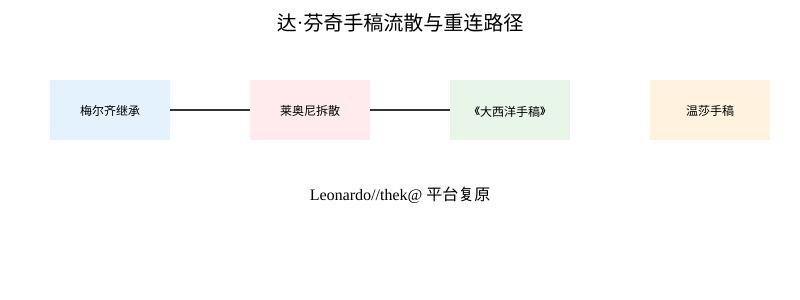
“达·芬奇的伟大，不只在于他知道很多，而在于他总能把世界重新连接起来。”
本展览以 8 个主题展区串起一个核心问题：达·芬奇留下的不是完整著作，而是一份被拆散的纸页宇宙。下面是核心展品与图解的索引，你可以从任何一件开始。
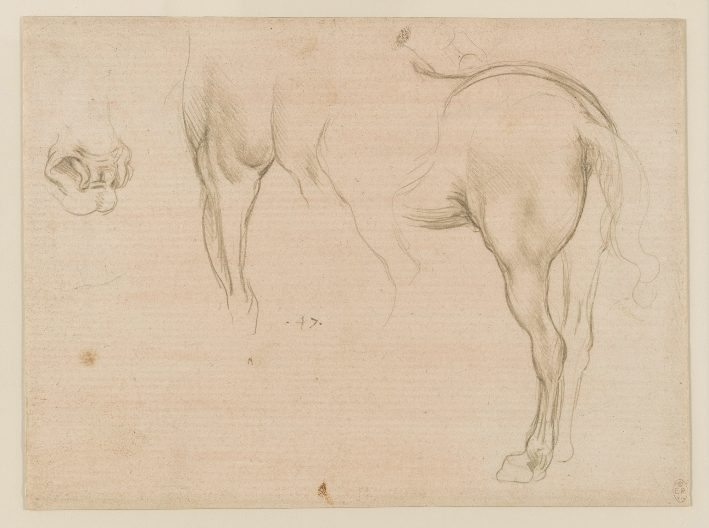
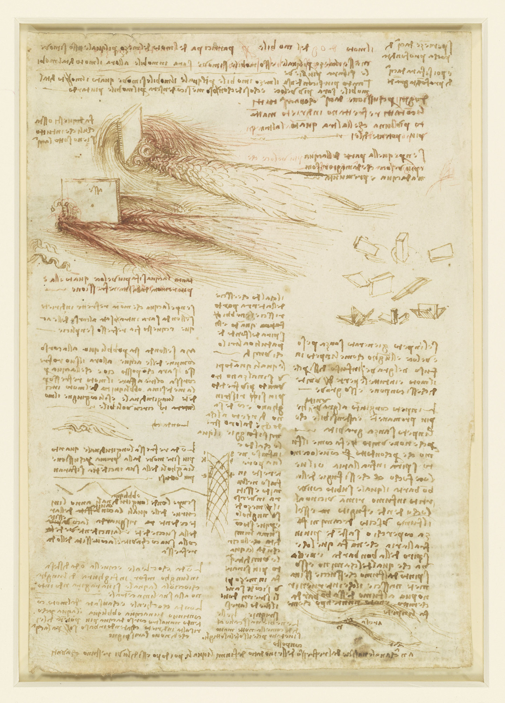
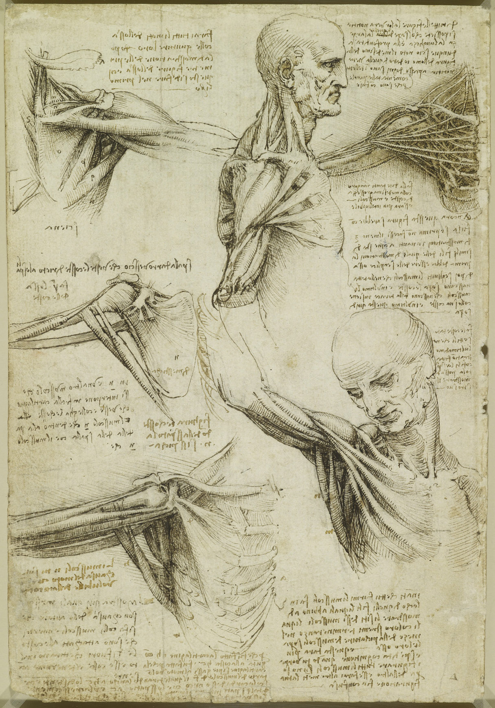

看达·芬奇手稿不是"看画"。它是按四步走的观察工作。下面 4 张卡是本展览的"看图导览"——先看整体，再看运动，再看材料，最后看连接。每张卡都标了对应的展区与平台工具，你可以照着走一遍。
看图像、文字、空白、边缘、方向——一张手稿的"格式"往往先告诉你它属于哪一类。
看水流、肌肉、马的姿态、机械转动如何被画出来——达·芬奇不是在"画静物"，而是在研究运动。
看水印、纸张、裁切边缘、编号、馆藏信息——这些是"被拆散"与"曾经相连"的物理证据。
看它与其他纸页、主题、平台工具之间的关系——单张手稿的"意义"在于它和什么相邻。
同一组手稿，三种走法。挑一条开始；中途换路线没问题。
开启后页面会高亮核心展区，其余展区降为可跳过。
适合：第一次打开这个页面的观众。
重点看：展品索引 · 温莎绘图 · 复原拼合 · 达·芬奇方法。
路过：#exhibit-index · #section3 · #section6 · #section8
适合：想了解全脉络的读者。
重点看：完整阅读 8 个展区，理解手稿从散页、拆分、分藏到数字重连的全过程。
路过：#intro-detail · #section1 · … · #section8
适合：关注数字人文、知识库、档案系统的人。
重点看：水印证据链 · 复原拼合 · 比较研究 · Leonardo//thek@ 工具。
路过：#section5 · #section6 · #section7 · .sources
核心问题：达·芬奇留下的到底是什么？被拆散的纸页如何成为今天的"宇宙"？
1519 年达·芬奇去世后，弟子弗朗切斯科·梅尔齐继承了全部手稿，并整理为多个笔记本。半个多世纪后，雕塑家庞佩奥·莱奥尼获得了这些散页。他把它们裁切、重新装订成两本巨册：一本成为今天的《大西洋手稿》（Codex Atlanticus），另一本后来进入英国皇家收藏。
这种破坏性装订切断了达·芬奇原本的思考脉络。一张讨论飞行器的纸可能被裁成两半，一页关于心脏的解剖笔记可能被贴进另一本手稿。莱奥尼的剪刀，让思想变得碎片化。
本展览借助 Leonardo//thek@ 平台，沿着手稿的命运走一遍——看清它如何被拆散，又如何被数字工具重新组织为可读的研究对象。策展的目的不是复原"完美的达·芬奇"，而是让人看见知识如何在纸面上生成、错位、重组。
核心问题：是谁、为什么、如何拆散了达·芬奇的手稿？
弗朗切斯科·梅尔齐（Francesco Melzi）是达·芬奇最忠实的弟子。1519 年达·芬奇去世后，梅尔齐继承了全部手稿，并将它们整理成多个笔记本。梅尔齐去世后，这些手稿逐渐流入市场。
16 世纪末，意大利雕塑家庞佩奥·莱奥尼（Pompeo Leoni）获得了大量达·芬奇手稿。他用剪刀把这些散页裁切、重新分类、装订成两本大册。一本后来成为今天的《大西洋手稿》，藏于米兰安布罗西安图书馆；另一本进入英国皇家收藏，保存在温莎。
莱奥尼的装订方式是"破坏性"的。他把原本可能属于同一笔记本的页面拆开，把不同主题的纸混装在一起。这种做法虽然让手稿看起来更"整齐"，却切断了达·芬奇原本的思考脉络。
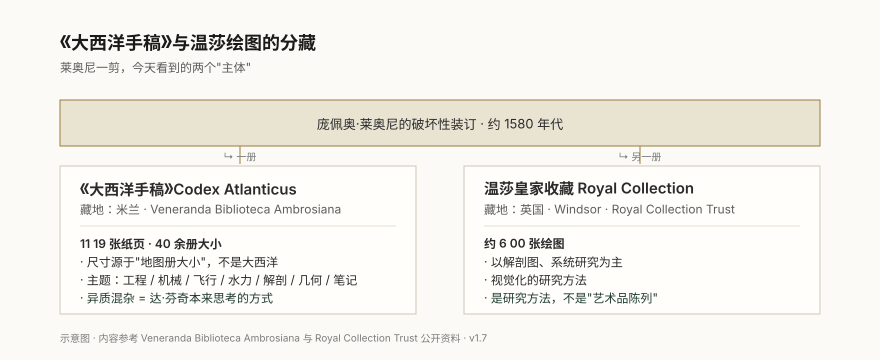
从一张纸被画下的那天起，到今天在中文展览里被重新讲述——这之间发生了什么？
达·芬奇在法国昂布瓦斯去世。弟子梅尔齐（Francesco Melzi）继承全部手稿，把散页整理为多个笔记本。
雕塑家 庞佩奥·莱奥尼（Pompeo Leoni）获得大部分手稿。破坏性裁切与装订：他把数千张纸剪开、混装，重组成两本巨册。
材料逐渐分藏：一册被米兰安布罗西安图书馆获得（今称《大西洋手稿》），另一册数度转手后流至英国。
米兰安布罗西安图书馆（Codex Atlanticus）与英国皇家收藏（温莎 Royal Collection）成为两大核心馆藏，长期分开被研究。
Leonardo//thek@ 1.0 上线，聚焦《大西洋手稿》数字化、检索、9 大工具。
Leonardo//thek@ 2.0 扩展整合温莎 Royal Collection 材料，强调并置比较与复原。
本中文展览用中文重新讲述这段五百年旅程——从梅尔齐的笔记本，到莱奥尼的剪刀，到数字平台的反向复原。
核心问题：什么是"大西洋手稿"？它为什么得名？里面到底是什么？
《大西洋手稿》（Codex Atlanticus）得名于其装订尺寸——类似大西洋地图册——与内容是否涉及大西洋无关。它是现存最大的达·芬奇手稿集，共 1119 张手稿页，涵盖机械、飞行器、水利、几何、解剖与日常笔记等几乎所有领域。
它不是达·芬奇自己编订的，而是莱奥尼把不同时期、不同主题的散页强行装订在一起的结果。混装反而留下了达·芬奇最真实的工作现场：机械手稿旁接解剖笔记，飞行草图紧贴植物写生。这种泥沙俱下是《大西洋手稿》最具研究价值的部分。
Leonardo//thek@ 平台同时支持三种观看尺度：① 整册 · ② 单张 · ③ 主题词索引。本展区依次展示这三种尺度如何接上同一张纸。
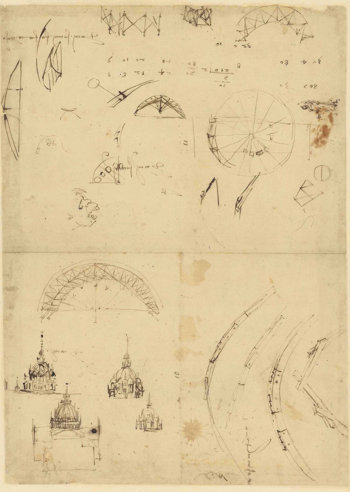
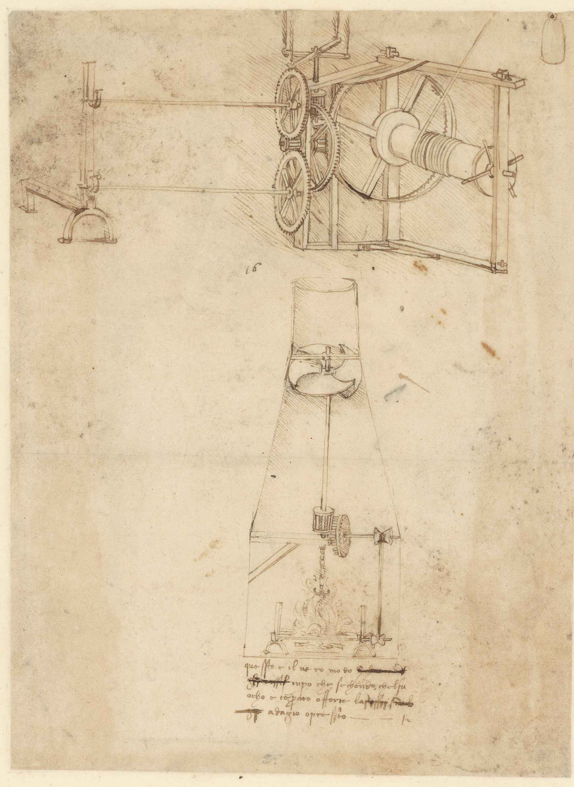
Codex Atlanticus f.719 / f.21 的高清数字影印来自 Wikimedia Commons（公共域），原物由米兰 Veneranda Biblioteca Ambrosiana 收藏。
核心问题：温莎手稿与《大西洋手稿》有什么不同？为什么不能把它们当成"另一种大西洋"？
温莎皇家图书馆收藏了约 600 张达·芬奇绘图，其中解剖图最系统，动物与风景图最生动。这些绘图不是艺术作品，而是达·芬奇用来观察与理解世界的工具。
与《大西洋手稿》的工程笔记不同，温莎手稿更强调视觉记录。达·芬奇在这里反复描绘同一主题——马的运动、水的涡旋、猫的姿态、老人的面容——他用画笔进行的是研究，不是创作。
本展厅所有 RCIN 编号与原题引自 Royal Collection Trust 公开在线收藏，访问时间 2026 年 7 月。
下面两张温莎皇家收藏的图，作者提供"先看哪里 / 再看什么 / 最后理解什么"三步细读法。点击图片可放大查看。
与达·芬奇方法的关系：把自然观察变成运动研究，再用多次绘图逼近一个理论。这正是 Leonardo//thek@ Subject Indexes 试图在数字侧复现的工作。
与达·芬奇方法的关系：把身体当作一台机器来理解，绘图是它的工程图。这正是他画《维特鲁威人》的同一套思维。
核心问题：达·芬奇真的把"艺术"与"科学"分开了吗？还是他在同一张纸上同时做着两件事？
传统叙事里，达·芬奇是"艺术 + 科学"的代表人物。但如果只看《大西洋手稿》，你会发现：他没有把艺术和科学分开过——他把它们画在同一页上、同一个笔记本里、同一段笔记内。
理解这一点，能让你重新认识他：他不是"既懂艺术又懂科学"的人，而是在同一张纸上同时构建两件事的人。纸页混杂，正是他思考的形状。
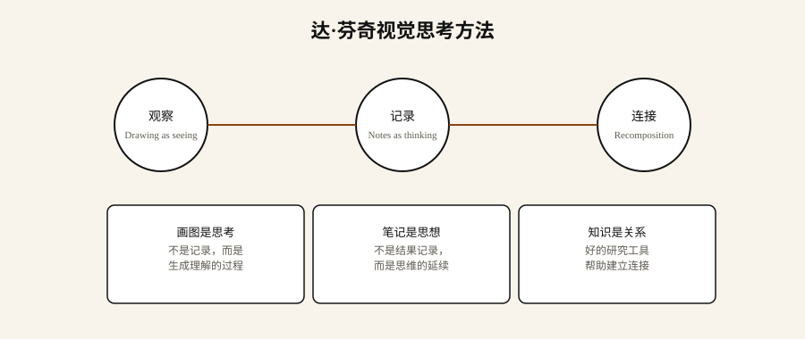
水、肌肉、马、植物——达·芬奇回到自然反复看。
用钢笔与墨水，把观察抽象为可读的结构图。
从结构图直接推导出机器、装置、原理。
核心问题：复原拼合可以靠"看着像"吗？不可以。证据来自哪里？
复原不是靠研究者主观判断"两张纸看起来属于同一笔记本"。它是靠物理证据的同向叠加。纸张，在这里不是背景，而是证据——水印像手稿的指纹，纤维暴露纸张年代，裁切边缘暴露了莱奥尼的剪刀痕迹。
Leonardo//thek@ 平台上的 Watermarks（水印）模块，把欧洲 14-16 世纪不同造纸厂的水印编目成可查询数据库。研究者可以凭"水印形""纤维成分""纸张厚度"三条线索同时命中一个候选笔记本。
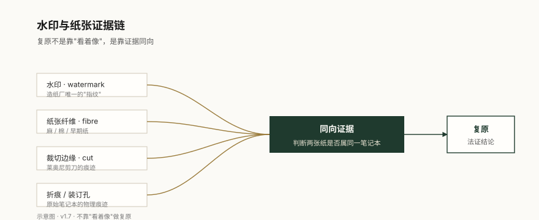
Leonardo//thek@ · 模块截图 · 关键
把欧洲 14–16 世纪不同造纸厂的水印编目成可查询数据库。研究者凭水印形、纤维成分、纸张厚度三条线索同时命中一个候选笔记本——这是"反向拆散"的核心判断层。
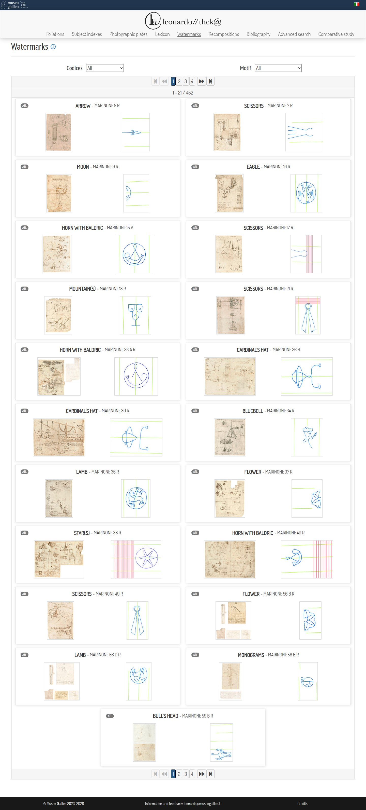
研究界面说明 · Watermarks
核心问题：数字工具能不能把"破坏性装订"反转？我们离答案还有多远？
复原拼合不是简单"把两张图放在一起"。它需要：① 候选笔记本结构（用页码、装订孔、纸张顺序推测原笔记本）；② 法证证据链（展区 5 讲过的水印、纤维、裁切边缘）；③ 数字工具（Recompositions 模块）。三件事缺一不可。
平台目前仍处于"持续拼合"的状态——每一组证据新发现，都可能让一批纸页"回家"。这件事 500 年都没完成，今天正在被加速完成。
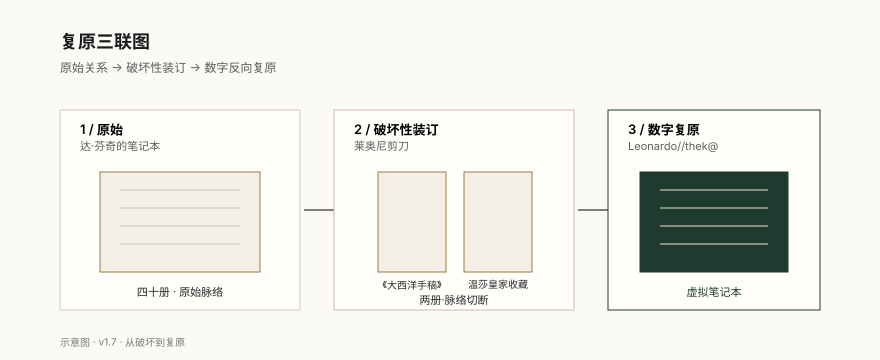
Leonardo//thek@ · 模块截图 · 关键
Recompositions 不是"把两张图放在一起"。它结合候选笔记本结构（页码、装订孔、纸张顺序）、法证证据链（展区 5 的水印/纤维/裁切边缘）、与数字工具，输出可能被复原的页对。这是 500 年来第一次"反向拆散"有数字工具配套。
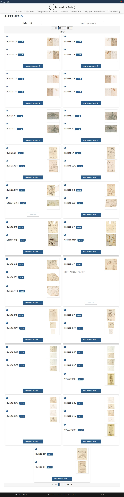
研究界面说明 · Recompositions
核心问题：一个数字平台如何解决"被拆散的手稿"？它提供了哪些工具？
这 9 个工具不是平均用力——研究者通常一次跨 2–4 个工具组合使用。本展重点看 Watermarks（水印证据）、Recompositions（数字复原）与 Comparative Study（跨馆藏比较）。从首页入口条带进入任一工具，平台会在侧栏自动露出相邻的判断层。
Leonardo//thek@ · 平台首页
平台首页把全部 9 个研究工具横向铺开：Foliations · Subject Indexes · Photographic Plates · Lexicon · Watermarks · Recompositions · Bibliography · Advanced Search · Comparative Study。研究者从这里进入任何一个判断层。
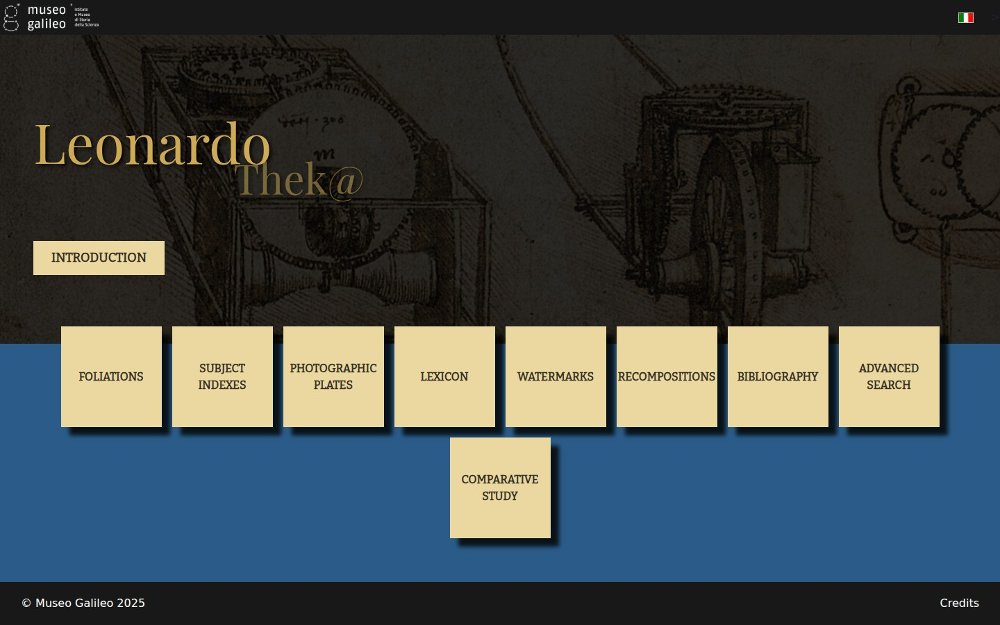
研究界面说明 · 首页
研究界面档案 · Comparative Study
研究界面档案 · Advanced Search
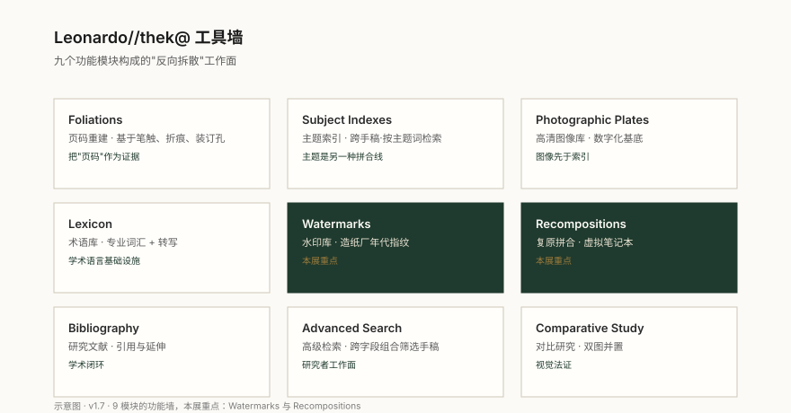
页码重建
主题索引
高清图像
术语库
水印·本展重点
复原·本展重点
研究文献
高级检索
对比研究
四个真实的研究场景，每个对应一组平台工具。
我想知道一张纸的原始编号
对应工具：Foliations（页码重建）
复原在莱奥尼剪裁之前的页码顺序——比如两张今天看来不相关的纸，可能原本是同一册。
这是判断"这两张是否曾经相连"的最低门槛数据。
我想按主题进入手稿
对应工具：Subject Indexes（主题索引）
在 1100+ 张 Code Atlanticus 内按主题（水、机械、解剖、几何）跨页检索。
主题是研究者真正用的入口——不是按编号走，而是按问题走。
我想判断两张纸是否原本相连
对应工具：Watermarks + Recompositions
水印、纤维、裁切边、折痕/装订孔四个证据同向汇聚 → 复原判断。
这是真正"反向拆散"的判断层——本展重点。
我想并排比较米兰与温莎的材料
对应工具：Comparative Study（对比研究）
两张图同一屏并列——一本地、一异地，看同一主题在不同手稿里的不同处理。
"被拆散"的最直观症状就是同一主题散落两地。Comparative Study 让它们重逢。
平台 9 大工具（Foliations · Subject Indexes · Photographic Plates · Lexicon · Watermarks · Recompositions · Bibliography · Advanced Search · Comparative Study）构成完整研究工作台——上面 4 个场景只是研究者的"高频起点"。
核心问题：一个 500 年前的人怎么思考问题？他的方法今天还能不能用？
纸页是他的实验室，也是他的编译器。四条核心方法可被今天的创造者直接拿来用：
他不是先想清楚再画图，而是用画图来"想清楚"。今天我们仍然可以这样做：把待解问题画一遍，常常在画画过程中才发现答案。
他写笔记不是"保存已经想到的"，而是"在写字的过程中继续想"。这一点对所有内容创作都成立。
他把不同领域画在同一页，是在手动维护一组关系。今天做知识库的关键也不是收录量，而是条目之间能被连起来的方式。
他没有"先做艺术，再做科学"。他在"做一件事"的同时调用两类材料。这就是他能比同时代人更深地看见自然的原因。
今天，当我们面对海量信息时，达·芬奇的方法依然有效：画图是思考，笔记是思维的延续，好的知识库不是堆资料，而是建立连接。
本展览展示的不是「达·芬奇很聪明」，而是：知识如何在材料与关系里被打断，又如何被重新接起来。
如果你走出这场展览后记住一件事，希望不是「达·芬奇画马画得好」，也不是「他什么都懂」——而是「他用纸页把不同领域连在一起，而这种连接既脆弱、也珍贵」。纸页可以被拆散，证据可以被磨掉，但「按关系组织材料」这件事，在 500 年后依然是我们面对知识时最重要的方法。
本展览出现的专有名词和平台工具，按"中文名 + 英文/原名 + 一句话解释"的形式整理。读展览时遇到陌生词，可以回来查。
Codex Atlanticus《大西洋手稿》
达·芬奇手稿的最大合集，共 1119 页，藏于米兰安布罗西安图书馆。"Atlanticus" 是因为它装订成地图册大小——和大西洋没关系。
Royal Collection英国皇家收藏（温莎）
藏于温莎城堡的英国王室艺术收藏，其中约 600 张是达·芬奇手稿。温莎这部分更多是绘图和速写，工程笔记较少。
Leonardo//thek@teche.museogalileo.it/leonardo
由 Museo Galileo 与意大利文化部合作运营的数字平台。把《大西洋手稿》与温莎手稿做数字化、检索、复原的工具集——本展览所有"平台截图"都来自这里。
Foliations页码系统
复原在莱奥尼剪裁之前的页码顺序。研究者靠装订孔、纸张尺寸、墨水深浅推测"这张纸在原笔记本的哪一页"。
Subject Indexes主题索引
按主题（水、机械、解剖、几何）跨页检索 1119 页《大西洋手稿》。主题词取自达·芬奇自己用过的拉丁/意大利语词。
Watermarks水印
欧洲 14–16 世纪造纸厂在纸浆里留下的暗记——像纸的"指纹"。每种水印对应一间造纸厂和一段时代。Watermarks 模块把水印编目成可查询数据库。
Recompositions复原拼合
用 Foliations + Watermarks + 候选笔记本结构，把"被莱奥尼剪裁后分藏"的纸页尝试拼回原笔记本。平台最核心的"反向拆散"工具。
Comparative Study比较研究
把同一主题的不同手稿并置显示——例如 Codex Atlanticus 一页与温莎 RCIN 一页左右对照——看同一思想在不同馆藏的不同表达。
Advanced Search高级检索
让研究者按水印 + 纤维 + 时代 + 馆藏等多个字段同时检索——本质是把 1119 页手稿当成可 SQL 查询的数据库。
Photographic Plates摄影图版
高分辨率扫描的原始手稿图像——通常 6000+ 像素宽，是所有平台工具的"基底数据"。任何分析都从这里开始。
Lexicon词汇索引
把达·芬奇用过的解剖学、植物学、机械学、几何学词汇统一索引——一个词条会指向它出现在哪几张手稿上。
Bibliography书目
平台收录的与达·芬奇手稿相关的研究文献——按主题、年份、作者分类。研究者从这里找"别人已经做过什么"。
Pompeo Leoni庞佩奥·莱奥尼
16 世纪末的意大利雕塑家。约 1580–1590 年获得达·芬奇手稿，进行了"破坏性裁切与装订"——把散页剪开、混装，重组成两本巨册。本展览的核心事件。
Francesco Melzi弗朗切斯科·梅尔齐
达·芬奇最忠实的弟子。1519 年达·芬奇去世后，他继承了全部手稿并整理为多个笔记本。梅尔齐之后这些手稿逐渐流入市场。